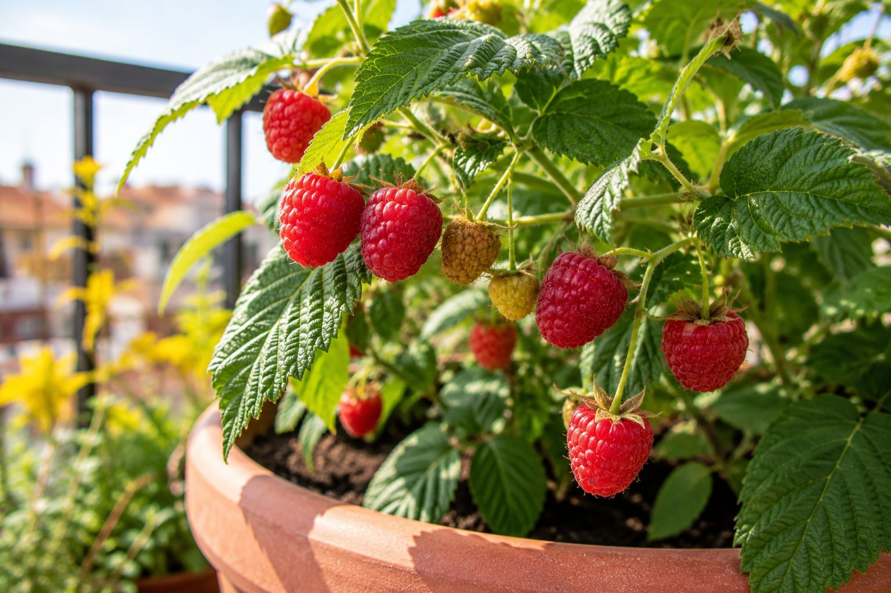

Los frutos rojos son uno de los cultivos más satisfactorios para un balcón: la fruta recién cogida no tiene nada que ver con la del supermercado, y son plantas que, bien elegidas, producen año tras año. La clave está en escoger las variedades adaptadas a maceta, porque las tradicionales pueden volverse demasiado grandes e invasivas.
1. Elige variedades compactas o enanas
Este es el primer paso y el más importante. Las frambuesas y moras tradicionales pueden superar los dos metros y extenderse sin control. Para maceta existen variedades compactas y enanas diseñadas para espacios reducidos:
- Frambuesa enana: variedades como 'Raspberry Shortcake' no superan el metro de altura y no tienen espinas, perfectas para balcón.
- Mora sin espinas: las variedades enanas sin espinas son cómodas de manejar y muchas dan doble cosecha al año.
Pregunta en el vivero por variedades "de maceta" o "compactas". Te ahorrarás muchos problemas de espacio.
Lo esencial para frutos rojos en maceta (verificado en Amazon):
Maceta grande con drenaje: Mínimo 30-40L; los frutos rojos necesitan espacio de raíz. 🛒 Ver en Amazon →
Sustrato ácido para frutos rojos: Como el arándano, prefieren un suelo ligeramente ácido. 🛒 Ver en Amazon →
Abono para frutos rojos: Aporta los nutrientes para una buena fructificación. 🛒 Ver en Amazon →
2. Sol, pero con matices según tu zona
Los frutos rojos provienen de zonas de bosque, donde crecen a media sombra. Esto importa mucho según dónde vivas:
- Norte y zonas frescas: aquí pueden ir a pleno sol sin problema.
- Centro y sur de España: en verano el sol del mediodía es demasiado fuerte. Lo ideal es sol de mañana y sombra en las horas centrales, o usar una malla de sombreo. Es una práctica habitual incluso en las plantaciones profesionales del sur.
3. Riego constante, sin encharcar
Los frutos rojos no toleran bien la sequía prolongada, sobre todo durante la floración y cuando se están formando los frutos: es justo entonces cuando más agua necesitan para que las bayas salgan jugosas. Mantén el sustrato húmedo pero nunca encharcado. Como son macetas grandes, calcular bien los litros evita tanto el estrés por sequía como la pudrición de raíz.
🍓 Riega en la base, no sobre la fruta: mojar los frutos favorece la aparición de moho gris (botritis), que estropea la cosecha. Dirige siempre el agua al sustrato, no a las hojas ni a las bayas.
4. La poda, más simple de lo que parece
La frambuesa produce sobre las cañas (los tallos largos). Según la variedad, conviene cortar las cañas que ya han dado fruto para dejar sitio a las nuevas. No es complicado: en general, en invierno se retiran las cañas secas y dañadas. La mora enana de doble cosecha apenas necesita mantenimiento más allá de controlar su tamaño.
5. Cuándo plantar según tu zona
El mejor momento para plantar frutos rojos es cuando las temperaturas no son extremas: otoño o final del invierno en la mayoría de zonas, evitando el calor fuerte del verano que estresa a la planta recién plantada. Para los meses exactos de tu municipio, usa el calendario de siembra.
Calcula los datos exactos para tu caso
Estas herramientas gratuitas te dan los números exactos para tu situación, sin registro:
← Volver a Consejos | Te puede interesar: Cómo cultivar arándanos en maceta · Cómo cultivar fresas en maceta